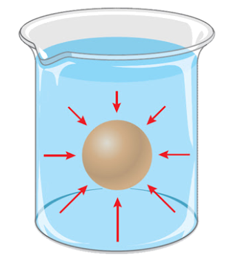
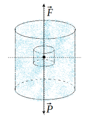
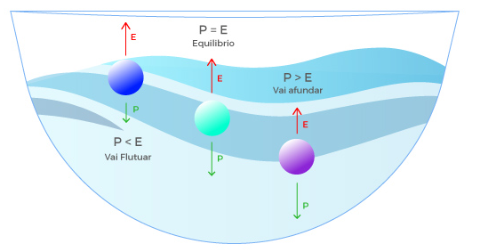

Aula5-36: Teorema de Arquimedes
Teorema de Arquimedes (teorema da força empuxo)
Enunciado:
Um corpo imerso em um fluido sofrerá uma força para cima, de magnitude igual à magnitude do peso do volume de líquido por ele deslocado.
Essa força é chamada empuxo e pode ser obtida por meio da seguinte fórmula:
Obs.: Na fórmula acima, o volume da parte submersa do corpo estudado substitui o volume de líquido deslocado, isso acontece porque o volume de água deslocado é equivalente ao volume submerso do corpo.
⚛ ORIGEM DA FORÇA EMPUXO:

Observe a imagem ao lado, perceba que o objeto imerso é acometido pela pressão do líquido por todas as direções. As pressões que atuam nos planos horizontais, portanto nas “laterais” do objeto, se equilibram porque a pressão que age num lado tem a mesma magnitude da que se opõe no outro (porque estão numa mesma profundidade). Agora, as pressões que agem em planos verticais, isto é, na parte de cima e de baixo do objeto, não se equilibram porque estão em profundidades diferentes. Feito esta análise, agora podemos inferir que a força de empuxo é tributária da diferença de pressão existe entre as partes superiores e inferiores do objeto imerso em líquido.
⚛ DEMONSTRAÇÃO DA FORÇA EMPUXO:

A demonstração que se segue não é cientificamente rigorosa (na aula seguinte, realizaremos uma demonstração mais ortodoxa).
Imagine um corpo de água imerso em água (isto mesmo, como se segregássemos um volume delimitado de água), como mostra a figura ao lado. Assim sendo, é sensato pensarmos que este corpo não tenderá a afundar, tampouco soerguer-se, flutuar. De fato, este corpo tenderá a permanecer imóvel no lugar em que foi deixado, isso ocorre porque a força peso dele é equilibrada pela força que surge ao colocarmos ali, a força de empuxo. Podemos extrair deste experimento mental que, para isto ser verdade – e é verdade, a força empuxo deve ter a magnitude do peso de líquido deslocado ao se colocar o objeto naquela posição:
Corpo emerso, em equilíbrio ou submerso

Para sabermos se um objeto afunda ou flutua num determinado líquido, precisamos apenas comparar a força peso e a força empuxo que atuam sobre ele.
I. Se empuxo é maior que o peso, o objeto apresentará uma parte do corpo emerso, e outra submerso.
II. Se empuxo é igual ao peso, o objeto ficará submerso, sem necessariamente afundar. Ele ficará no lugar que for colocado e lá permanecerá.
III. Se empuxo é menor que o peso, o objeto afundará.
⚛ OUTRO MODO DE SE ANALISAR
Também podemos saber se o comportamento do objeto simplesmente comparando a sua densidade com a densidade do líquido que o receberá. Isso se justifica por que:
I. Se empuxo maior que peso (lembremo-nos que, neste caso, o volume de líquido deslocado é igual ao volume do objeto), então a densidade do líquido é maior que a densidade do objeto:
, como v e v são iguais, a razão entre eles é um, logo podemos concluir que
II. Se empuxo e peso são iguais, então:
III. Se empuxo for menor que o peso então:(demonstrações análogas ao caso anterior).
|
Corpo |
Relação peso do corpo e empuxo |
Relação densidade do corpo e densidade do líquido |
|---|---|---|
|
Afunda (submerge) |
p > E |
d(corpo) > d(líquido) |
|
Boia (emerge em parte) |
E > p |
d(líquido) > d(corpo) |
|
Não acontece nada |
p = E |
d(corpo) = d(líquido) |